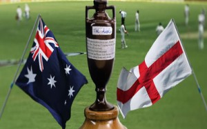

Ashes:

The Ashes is known as the clash of two continents, two nations and a great rivalry between the England and Australia. The name of this tournament has an interesting story, when England was beaten by Aussies in 1882. One of the Journalists of that wrote an Obituary, ‘in affectionate remembrance of English cricket which died at The Oval. The body will be cremated and the Ashes taken to Australia.’ The Australian supremacy was reluctantly accepted and then England took a pledge that it will be taking back its ashes and they did it in very next series by winning the tournament. This is the series which is followed by both the nations at times their players have expressed that this is the best tournament and the happiness of winning this is more than a World cup.